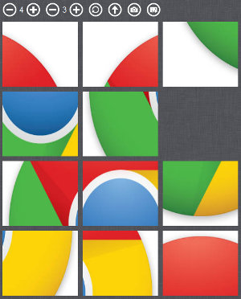

-
sniksnp/image-slider-game [link to game]
This is a sliding puzzle web application written in vanilla JS and HTML5. I'm doing this project for fun, and also to familiarize myself with web applications performance problems, unit and behavioral testing in Javascript, and various web technologies. The main goal is to develop a functionality allowing the user to play on any image of her choice, with the web application completely running on the client side. The source code is automatically minified on push using Grunt and a custom Python script, and then deployed by Travis CI to sniksnp.github.io/image-slider-game.

-
Performance testing of a REST Web service with Gatling
This is my end-of-degree internship project. I'm developing a Java/Scala hybrid application to automate performance testing of the REST Web service of an integrated library system (ILS) marketed as a SaaS. The goal of the project is to find how many simultaneous users the integrated library system can sustain, in order to adapt the production infrastructure as the number of customers grow.

I chose to use Gatling, an open source stress tool written in Scala, since it is well suited to test a Web service and it makes tests easy to maintain (contrary to JMeter). Furthermore, the fact that it is written in Scala makes it easy to interact with a Java application. The project consists in 3 Java CLI applications organized in Maven modules, used to either restore a test environment from multiple MySQL dumps, generate random test data from a database, or run the performance tests and generate test results. I also wrote a monitoring script which is executed while running the tests, in order to integrate the monitoring measures (CPU, RAM and I/O usage of the different VMs of the test environment) into the results from Gatling.
The main challenges of this project are to produce meaningful test data, and to find how to simulate real users behaviors by only sending and receiving Web service requests. Even though I'm part of an agile team of 8 developers, I'm working on performance tests individually but that obviously doesn't prevent me from suggesting new functionalities or discussing the progress of the project with the other team members.
-
sniksnp/junit_recipes
This is the code I write while reading JUnit Recipes, which consists in unit tests from the book and some ideas I have along the way. This project is built using Maven on Travis CI. Code coverage reports are generated using Cobertura, and are automatically pushed to Coveralls.io.